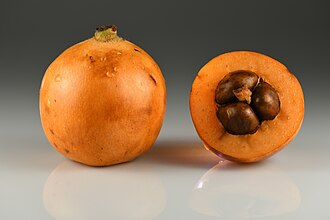

びわ（枇杷）の生産量 都道府県ランキング
全8県の順位と、とれた量
びわが日本でいちばん多くとれるのは長崎県です。697 tで、全国（2,180 t）の32%を占めます。

| 順位 | 都道府県 | 収穫量 | 全国に占める割合 |
|---|---|---|---|
| 1位 | 長崎県 | 697 t | 32% |
| 2位 | 千葉県 | 417 t | 19% |
| 3位 | 鹿児島県 | 159 t | 7.3% |
| 4位 | 香川県 | 132 t | 6.1% |
| 5位 | 愛媛県 | 123 t | 5.6% |
| 6位 | 大分県 | 95 t | 4.4% |
| 7位 | 兵庫県 | 82 t | 3.8% |
| 8位 | 和歌山県 | 37 t | 1.7% |
この数字について
- 分類：バラ科
- 全国の収穫量：2,180 t
- この数字が表すもの：収穫量（畑や田でとれた重さ）
- 調査：作物統計調査 作況調査（果樹） 令和6年産
- 8県分を調査（調査していない県は順位に入りません）
びわの生産量について、よくある質問
- びわの生産量が日本一の都道府県はどこですか？
- 長崎県です。作物統計調査 作況調査（果樹）（令和6年産）で697 tでした。
- びわの生産量ランキング2位・3位はどこですか？
- 2位は千葉県（417 t）、3位は鹿児島県（159 t）です。
- びわの生産量ランキング4位・5位はどこですか？
- 4位は香川県（132 t）、5位は愛媛県（123 t）です。びわの全8県の順位は上の表のとおりです。
- びわの全国の生産量はどれくらいですか？
- 2,180 t（令和6年産）です。